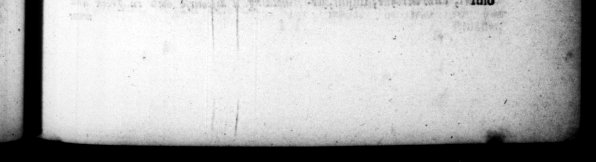

p MM 4 Fs convivium & ad alem luſum admoveri juſſit: & quaſi morarentur, ut ſomniculoſos per nuntium increpuir; Ducturus fas ky hr undtontra b rem. non ceſſavit omni rationc f/iam & alummam, & in remio [uo natam, atque eaucatam prœdlicare. Aufciruras m nemen familiz ſug Neronem, Ne. parum reprehendererur, * adulto jam filio privignum adoptaret, ident idem divulgavi, neminem ungqglan po aroptionem familia” Claudia inſertum. 40. Sermonis vero rerumque tantam ſepe negligentiam oſtendit, ut nec quis, nec inter quo, quove tempore, ac loco verba facerer, ſcire ac coitare Exiſtimaretur, Cum de Finiis ac vinarlis* agentur, exclamavit in curla, Rogo von, quis poteſf fine offula viyere? deſcripſitque abundantiam veterum tabernaum, unde ſolitus eſſet vmum olim & ipſe perere, De. quæſtote quodam candidato inter cauſas ſuffragationis ſuz poſuit, 25 pater ejus frigidam &gro ibi temſeſti ve dediſſet. Inducta teſte in ſenatu, Hes, inquit, matri, meæ liberta & ornatrix fuit e ſed me patronum ſemper exiſlima vit. Hoc ideo di, quod qudam ſunt adhuc in doma mes, qui me patronum non putant, Sed & pro trihunali, Oftienſibusqu:ddam publice orantibus, cum excanduitlet, Wibit habere ſewvoijeratus eſt, quare eos demerea ft quem alium & ſe liberum eſe. Nam Ula ejus quotidiatiag & plane ommum horarum & momentorum erant Quid,ego tibi Ihergoniusvideor, & Azh+4 mal wh Jr multaque falla etiam privatis deformia, nedum principi, neque infacundo, ne que indutto, 1 * . - TIBYOLAUDIUS! CASAR. . 7 Sent to reprimand” them as dreaming —— for making no more haſte. When wit calling her, his daughter, his lap. And when be was a. going to adopt Nero, as if he was not ſuſfeienly cenſured for adopting his ſon 1n-law, when he had a ſon of bu own at man's e ſtate, be now and then declared lickly, that: no body had ever taken by adoption Into the Claudian family. ared leſs 22127 e ved he never * * , * He * time, or 14 Ww out a g bit now and then? And then recounted to them the great plenty of the old taverns, from whence be him ſelf uſed formerly to have bun wine, other reaſons of bu favouring with his , 4 certain ge | that ſtood c for the ips this he gave for one, that his father had once ſeaſonably given him 2 draught of cold water when he was lick. Upon bringing 4 woman as an evidence in ſome cauſe before the ſenate, he expreſſed himſelf in theſe words, This woman. was my mother's freed-woman and. dreſſer, but ſhe always looked upon me as her patron. And chis I ſay, becauſe there are ſome ſtill in my family that do not look me as ſuch. The Oftienſsamns addreſh him in open court with a petition, be into a rage at t and ſaid, That he _ m_ oblige chem, if 2ny one elſe was free to do what he pleaſed, ſurely he was. The following ſayings he had in his mouth and at all hours and ſeaſons, 1 do you take me for a jus? And in Greek, Speak, but do not touch was about hs inceſtuaus marri b ippina, he was percent | ling, born and brought up'opon” his 1 ii
